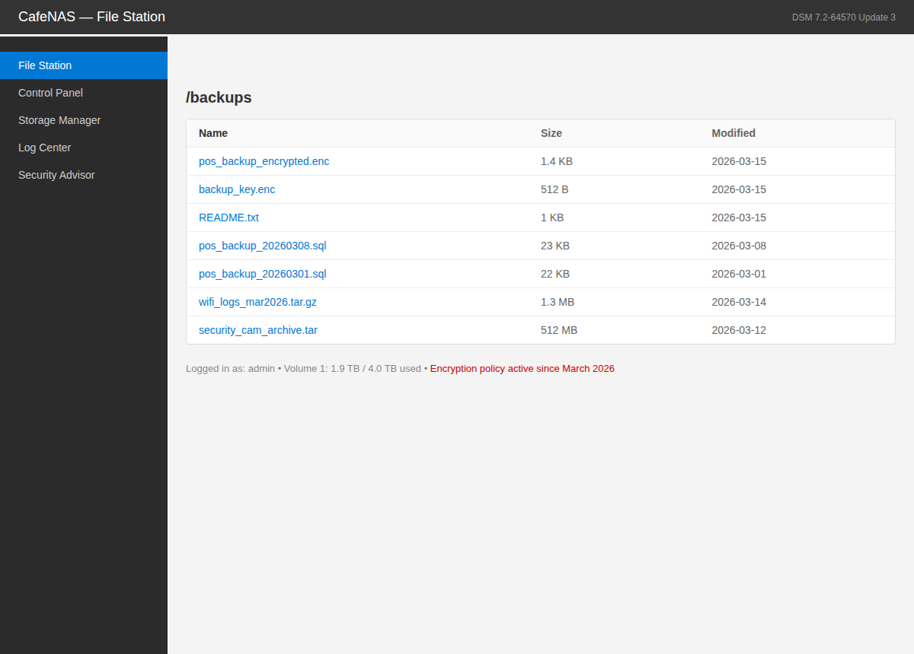

Exercise 11B: Protect the Backup
Engagement Status
Client: Bean & Byte Cafe Role: Security Auditor Phase: Reconnaissance Service Enumeration Exploitation Detection Defense Encryption
What you know so far:
- You've completed Exercise C11.1 and understand symmetric (AES) and asymmetric (RSA) encryption
- You know the hybrid approach: AES encrypts the data, RSA encrypts the AES key
- You've practiced encryption and decryption with OpenSSL on the command line
- The cafe recently implemented an encryption policy for all POS backup files on the NAS
Your task: The NAS has an encrypted backup that the cafe owner needs urgently. The IT admin who set up the encryption is unreachable. Find the decryption key, reverse the hybrid encryption chain, and recover the backup contents.
Objective
Independently decrypt a hybrid-encrypted backup file on the NAS. The backup was encrypted using AES-256-CBC, and the AES key was encrypted using RSA. You must locate the RSA private key, decrypt the AES key, then use it to decrypt the backup file and recover the flag.
Difficulty: Beginner Estimated time: 45 minutes
Scenario
The Bean & Byte Cafe implemented your encryption recommendations from Phase 11. All POS backup files on the NAS are now encrypted using the hybrid approach:
- A random AES-256 key encrypts the backup data
- The AES key is encrypted with an RSA public key
- Only the corresponding RSA private key can reverse the chain
The cafe owner needs the latest POS revenue report for a tax filing deadline. The IT admin who configured the encryption left for a two-week vacation and isn't answering their phone.
The encrypted backup is on the NAS. The decryption key is somewhere on the network. The cafe owner is counting on you.
See the Encrypted Backup on the NAS
The NAS runs a web File Station you can open in a browser before you touch the command line. Seeing the encrypted files listed makes the task concrete: you are looking at the exact .enc files you will decrypt. The NAS serves this console over HTTPS on port 8443. Substitute your own subnet base for <NAS_IP>.
Open the NAS File Station
From a browser on your Kali machine, open the NAS File Station. It uses a self-signed certificate, so accept the browser certificate warning the first time.
The /backups view lists the cafe files. Two of them appear in red: pos_backup_encrypted.enc and backup_key.enc. The status line at the bottom reads Encryption policy active since March 2026. Those two red files are your target: the encrypted backup data and the RSA-encrypted AES key that protects it.

The File Station only shows you that the files exist; it does not decrypt them. To recover the backup you still need the RSA private key from the barista workstation and the OpenSSL chain below. Note the two .enc filenames now, because you will pull them off the NAS over SSH in the next steps.
Network Topology
| Device | IP Offset | Hostname | Role |
|---|---|---|---|
| Cafe Gateway | .1 | cafe-gateway | Default route, NAT |
| Barista Workstation | .23 | barista-pc | Staff workstation, IT admin's primary machine |
| NAS Backup | .127 | cafe-nas | File storage, contains encrypted backups |
Known credentials:
| Device | Username | Password |
|---|---|---|
| Barista Workstation | barista |
C0ff33_Br3w# |
| NAS Backup | admin |
password |
Objectives Checklist
Complete all items to successfully recover the backup:
- Connect to the NAS and examine the encrypted backup files
- Read the README to understand the encryption scheme used
- Locate the RSA private key on the barista workstation
- Copy the encrypted files to a machine where you can work with them
- Decrypt the RSA-encrypted AES key using the private key
- Decrypt the AES-256-CBC encrypted backup using the recovered key
- Read the decrypted backup and find the flag
- Submit the flag
Tools and Concepts
You have everything you need from Exercise C11.1. Here's a reminder of the relevant tools: no commands provided this time:
| Tool | What It Does |
|---|---|
openssl enc |
Symmetric encryption and decryption (AES) |
openssl pkeyutl |
Asymmetric encryption and decryption (RSA) |
ssh / scp |
Connect to remote machines and copy files between them |
cat |
View file contents |
ls -la |
List files including hidden ones |
find |
Search for files by name or pattern |
Key concepts to apply:
- The hybrid decryption chain has two steps: order matters
- The AES key must be decrypted first (with RSA), then used to decrypt the data
- The RSA private key might not be in an obvious location: IT admins often store keys in config directories
- Hidden files start with a dot (
.) and don't appear in a regularlslisting scpcan copy files between machines:scp user@host:/path/to/file ./local_destination
Flag
The flag is embedded in the decrypted backup file.
Flag format: OCR{_____________}
What to look for
Once you successfully decrypt the backup, the flag will be clearly visible in the file contents. You do not need to search for hidden text: read the decrypted output. If tokens appear with the OCR-SN: prefix, strip the prefix when assembling the flag.
Important Notes
- The backup was encrypted with AES-256-CBC (not AES-128-CBC). Make sure your decryption command uses the correct algorithm.
- The AES key was encrypted with RSA. You need the corresponding RSA private key.
- The
-base64flag was used during encryption, so you'll need it during decryption too. - Check the NAS README carefully: it tells you exactly what encryption was used.
Report Template
After recovering the backup, write a brief incident response report:
Paragraph 1: What Happened: Describe the situation: what was encrypted, what encryption scheme was used, and why access was needed urgently.
Paragraph 2: What You Did: Walk through the steps you took to recover the backup. What did you find, where did you find it, and how did you use it?
Paragraph 3: Recommendations: What should the cafe do differently? Consider:
- Key escrow: should a backup copy of the private key exist? Where should it be stored?
- Documentation: was the encryption setup documented? How would a new employee know how to access backups?
- Single point of failure: what happens if the IT admin's workstation is compromised or destroyed? Is the private key backed up?
- Separation of duties: should the same person who encrypts the backups also hold the only copy of the private key?
This report is not graded
The report is a professional development exercise. In real security consulting, documenting your findings and making actionable recommendations is as important as the technical work itself.
Common Pitfalls
- Using the wrong AES variant (AES-128 vs AES-256): the error message may be cryptic
- Forgetting the
-base64flag during decryption: results in a garbled output or error - Looking for the private key on the NAS instead of the barista workstation
- Trying to decrypt the backup directly with the RSA key (you must decrypt the AES key first)
- Not checking hidden files and directories (use
ls -laand explore.config/directories)
What's Next
With Exercises C11.1 and C11.2 complete, you understand the encryption fundamentals that protect data at rest and in transit. You can now:
- Encrypt files using symmetric (AES) and asymmetric (RSA) encryption
- Decrypt files using the corresponding keys
- Understand the hybrid approach that powers TLS/HTTPS and modern file encryption
- Apply encryption concepts to real-world scenarios independently
These skills are foundational for understanding certificate-based authentication, TLS inspection, VPN tunnels, and disk encryption: all topics you'll encounter in advanced security work.